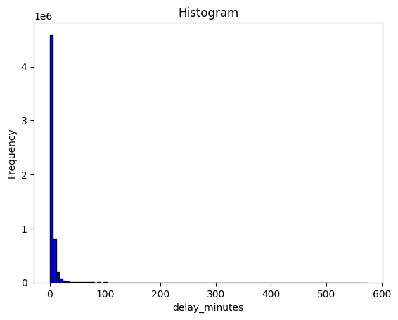
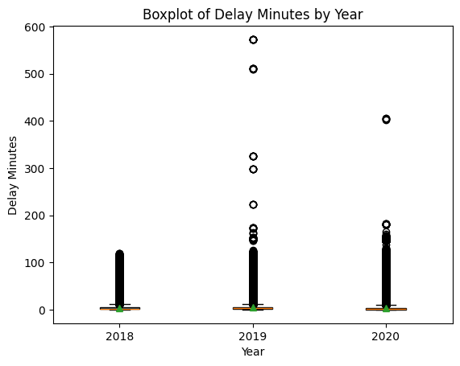
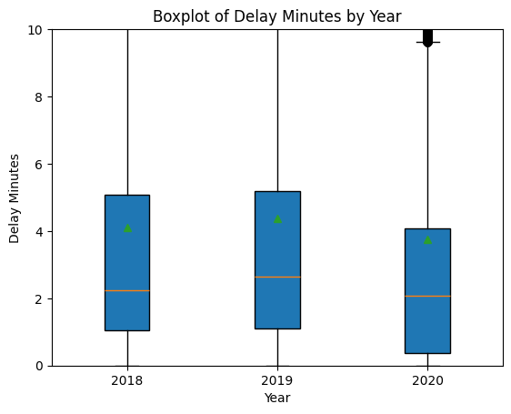
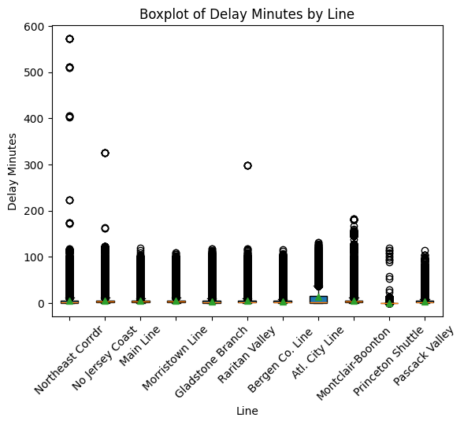

import pandas as pd
from sklearn.pipeline import Pipeline
from sklearn.neighbors import KNeighborsClassifier
from sklearn.tree import DecisionTreeClassifier
import numpy as np
from sklearn.compose import make_column_selector, ColumnTransformer
from sklearn.preprocessing import StandardScaler, OneHotEncoder, PolynomialFeatures
from sklearn.impute import SimpleImputer
from sklearn.linear_model import LinearRegression, LogisticRegression
from sklearn.model_selection import train_test_split
import warnings
from sklearn.neighbors import KNeighborsRegressor
from sklearn.tree import DecisionTreeRegressor
from sklearn.metrics import accuracy_score, roc_auc_score, classification_report, confusion_matrix, mean_squared_error
from sklearn.model_selection import cross_val_score, GridSearchCV, StratifiedKFold
import matplotlib.pyplot as plt
from sklearn.discriminant_analysis import LinearDiscriminantAnalysis, QuadraticDiscriminantAnalysis
from sklearn.exceptions import FitFailedWarning
from sklearn.svm import SVC
from sklearn.tree import plot_tree
import requests
from bs4 import BeautifulSoup
from sklearn.linear_model import LinearRegression, Ridge, Lasso, ElasticNet
from sklearn.metrics import r2_score
from sklearn.model_selection import KFold544 Project
Extracting Weather Data from the web
njweath = requests.get("https://climate.rutgers.edu/stateclim_v1/nclimdiv/index.php?stn=NJ00&elem=pcpn")
njweather = BeautifulSoup(njweath.content, "html.parser")rows = []
for row in njweather.find_all("tr"):
year_tag = row.find("th")
cells = row.find_all("td")
if year_tag and len(cells) >= 14:
year = year_tag.get_text(strip=True)
def get_cell_text(cell):
span = cell.find("span")
text = span.get_text(strip=True) if span else cell.get_text(strip=True)
return text.replace('*', '') # Remove any asterisks
January = get_cell_text(cells[1])
February = get_cell_text(cells[2])
March = get_cell_text(cells[3])
April = get_cell_text(cells[4])
May = get_cell_text(cells[5])
June = get_cell_text(cells[6])
July = get_cell_text(cells[7])
August = get_cell_text(cells[8])
September = get_cell_text(cells[9])
October = get_cell_text(cells[10])
November = get_cell_text(cells[11])
December = get_cell_text(cells[12])
rows.append({
"Year": year,
"January": January,
"February": February,
"March": March,
"April": April,
"May": May,
"June": June,
"July": July,
"August": August,
"September": September,
"October": October,
"November": November,
"December": December
})
nj = pd.DataFrame(rows)
nj.tail(20)| Year | January | February | March | April | May | June | July | August | September | October | November | December | |
|---|---|---|---|---|---|---|---|---|---|---|---|---|---|
| 116 | 2011 | 3.33 | 3.07 | 5.55 | 5.67 | 3.77 | 3.43 | 4.11 | 15.67 | 7.12 | 4.19 | 3.83 | 4.21 |
| 117 | 2012 | 2.78 | 1.33 | 1.65 | 2.87 | 4.27 | 4.30 | 3.43 | 4.62 | 4.45 | 5.43 | 1.30 | 5.56 |
| 118 | 2013 | 3.00 | 2.89 | 2.89 | 2.60 | 3.82 | 9.49 | 5.27 | 4.67 | 2.11 | 2.01 | 2.89 | 4.74 |
| 119 | 2014 | 3.12 | 4.96 | 3.97 | 4.42 | 4.72 | 3.32 | 5.23 | 4.08 | 2.50 | 3.64 | 4.34 | 4.65 |
| 120 | 2015 | 4.43 | 2.18 | 4.55 | 2.67 | 1.21 | 8.12 | 3.68 | 2.26 | 3.60 | 4.02 | 2.30 | 4.84 |
| 121 | 2016 | 3.19 | 4.08 | 1.87 | 2.26 | 4.79 | 2.40 | 6.97 | 2.08 | 3.45 | 2.80 | 2.43 | 3.27 |
| 122 | 2017 | 3.71 | 1.64 | 4.06 | 3.82 | 6.51 | 3.32 | 6.29 | 5.17 | 2.27 | 4.97 | 1.70 | 1.46 |
| 123 | 2018 | 2.72 | 6.08 | 4.64 | 4.17 | 5.80 | 3.30 | 5.91 | 5.56 | 7.57 | 4.46 | 8.65 | 5.90 |
| 124 | 2019 | 4.49 | 3.26 | 3.84 | 3.97 | 6.75 | 5.15 | 6.14 | 3.73 | 1.25 | 5.71 | 1.94 | 5.32 |
| 125 | 2020 | 2.29 | 2.79 | 3.61 | 3.98 | 2.47 | 3.05 | 6.69 | 6.09 | 4.41 | 5.03 | 4.09 | 5.35 |
| 126 | 2021 | 1.86 | 4.73 | 3.84 | 2.35 | 3.84 | 3.37 | 7.62 | 6.59 | 6.34 | 5.06 | 1.01 | 1.26 |
| 127 | 2022 | 3.37 | 2.71 | 2.64 | 5.04 | 5.28 | 3.39 | 2.05 | 2.34 | 3.11 | 6.46 | 2.88 | 4.78 |
| 128 | 2023 | 3.67 | 1.52 | 2.57 | 5.60 | 1.99 | 3.91 | 6.36 | 4.13 | 7.75 | 2.00 | 2.70 | 8.34 |
| 129 | 2024 | 6.20 | 1.76 | 7.77 | 4.12 | 3.08 | 2.48 | 3.89 | 6.09 | 0.78 | 0.02 | M | M |
| 130 | 30yr?Normal | 3.49 | 2.86 | 4.20 | 3.70 | 3.75 | 4.30 | 4.71 | 4.57 | 4.16 | 4.19 | 3.36 | 4.27 |
| 131 | POR?Mean | 3.45 | 3.09 | 3.91 | 3.75 | 3.77 | 3.85 | 4.62 | 4.61 | 3.77 | 3.54 | 3.40 | 3.80 |
| 132 | Median | 3.22 | 2.84 | 3.76 | 3.62 | 3.66 | 3.48 | 4.48 | 4.15 | 3.44 | 3.27 | 3.10 | 3.68 |
| 133 | Min | 0.54 | 0.66 | 0.82 | 0.96 | 0.64 | 0.32 | 1.27 | 0.98 | 0.29 | 0.02 | 0.54 | 0.40 |
| 134 | Max | 9.12 | 6.88 | 8.66 | 9.00 | 8.43 | 9.49 | 11.37 | 15.67 | 9.50 | 11.99 | 9.01 | 8.34 |
| 135 | Count | 130 | 130 | 130 | 130 | 130 | 130 | 130 | 130 | 130 | 130 | 129 | 129 |
nj_clean= nj.iloc[:-6]
nj_clean.tail(10)| Year | January | February | March | April | May | June | July | August | September | October | November | December | |
|---|---|---|---|---|---|---|---|---|---|---|---|---|---|
| 120 | 2015 | 4.43 | 2.18 | 4.55 | 2.67 | 1.21 | 8.12 | 3.68 | 2.26 | 3.60 | 4.02 | 2.30 | 4.84 |
| 121 | 2016 | 3.19 | 4.08 | 1.87 | 2.26 | 4.79 | 2.40 | 6.97 | 2.08 | 3.45 | 2.80 | 2.43 | 3.27 |
| 122 | 2017 | 3.71 | 1.64 | 4.06 | 3.82 | 6.51 | 3.32 | 6.29 | 5.17 | 2.27 | 4.97 | 1.70 | 1.46 |
| 123 | 2018 | 2.72 | 6.08 | 4.64 | 4.17 | 5.80 | 3.30 | 5.91 | 5.56 | 7.57 | 4.46 | 8.65 | 5.90 |
| 124 | 2019 | 4.49 | 3.26 | 3.84 | 3.97 | 6.75 | 5.15 | 6.14 | 3.73 | 1.25 | 5.71 | 1.94 | 5.32 |
| 125 | 2020 | 2.29 | 2.79 | 3.61 | 3.98 | 2.47 | 3.05 | 6.69 | 6.09 | 4.41 | 5.03 | 4.09 | 5.35 |
| 126 | 2021 | 1.86 | 4.73 | 3.84 | 2.35 | 3.84 | 3.37 | 7.62 | 6.59 | 6.34 | 5.06 | 1.01 | 1.26 |
| 127 | 2022 | 3.37 | 2.71 | 2.64 | 5.04 | 5.28 | 3.39 | 2.05 | 2.34 | 3.11 | 6.46 | 2.88 | 4.78 |
| 128 | 2023 | 3.67 | 1.52 | 2.57 | 5.60 | 1.99 | 3.91 | 6.36 | 4.13 | 7.75 | 2.00 | 2.70 | 8.34 |
| 129 | 2024 | 6.20 | 1.76 | 7.77 | 4.12 | 3.08 | 2.48 | 3.89 | 6.09 | 0.78 | 0.02 | M | M |
nj.replace("M", np.nan, inplace=True)nj_use = nj_clean.iloc[123:126]
nj_use| Year | January | February | March | April | May | June | July | August | September | October | November | December | |
|---|---|---|---|---|---|---|---|---|---|---|---|---|---|
| 123 | 2018 | 2.72 | 6.08 | 4.64 | 4.17 | 5.80 | 3.30 | 5.91 | 5.56 | 7.57 | 4.46 | 8.65 | 5.90 |
| 124 | 2019 | 4.49 | 3.26 | 3.84 | 3.97 | 6.75 | 5.15 | 6.14 | 3.73 | 1.25 | 5.71 | 1.94 | 5.32 |
| 125 | 2020 | 2.29 | 2.79 | 3.61 | 3.98 | 2.47 | 3.05 | 6.69 | 6.09 | 4.41 | 5.03 | 4.09 | 5.35 |
nj_rain = nj_use.melt(id_vars=['Year'], var_name='Month', value_name='Rainfall')
nj_rain['Year']=nj_rain['Year'].astype(int)Importing and Cleaning the Trains Datasets
import pandas as pd
import glob
# Replace with your CSV directory path
trains_folder = "C:/Users/hblin/OneDrive - Cal Poly/GSB 544/Project/nj_trains/*.csv"
# Load all CSV files into a dictionary
csv_files = glob.glob(trains_folder) # This finds all CSV files in the folder
dataframes = {file: pd.read_csv(file) for file in csv_files}
# Print or process each DataFrame
for file, df in dataframes.items():
print(f"Data from {file}:\n", df.head())
Data from C:/Users/hblin/OneDrive - Cal Poly/GSB 544/Project/nj_trains\2018_03.csv:
date train_id stop_sequence from from_id \
0 2018-03-01 3805 1.0 New York Penn Station 105
1 2018-03-01 3805 2.0 New York Penn Station 105
2 2018-03-01 3805 3.0 Secaucus Upper Lvl 38187
3 2018-03-01 3805 4.0 Newark Penn Station 107
4 2018-03-01 3805 5.0 Newark Airport 37953
to to_id scheduled_time actual_time \
0 New York Penn Station 105 2018-03-02 01:22:00 2018-03-02 01:21:05
1 Secaucus Upper Lvl 38187 2018-03-02 01:31:00 2018-03-02 01:31:08
2 Newark Penn Station 107 2018-03-02 01:40:00 2018-03-02 01:40:07
3 Newark Airport 37953 2018-03-02 01:45:00 2018-03-02 01:45:10
4 North Elizabeth 109 2018-03-02 01:49:00 2018-03-02 01:49:10
delay_minutes status line type
0 0.000000 departed Northeast Corrdr NJ Transit
1 0.133333 departed Northeast Corrdr NJ Transit
2 0.116667 departed Northeast Corrdr NJ Transit
3 0.166667 departed Northeast Corrdr NJ Transit
4 0.166667 departed Northeast Corrdr NJ Transit
Data from C:/Users/hblin/OneDrive - Cal Poly/GSB 544/Project/nj_trains\2018_04.csv:
date train_id stop_sequence from from_id \
0 2018-04-01 7837 1.0 New York Penn Station 105
1 2018-04-01 7837 2.0 New York Penn Station 105
2 2018-04-01 7837 3.0 Secaucus Upper Lvl 38187
3 2018-04-01 7837 4.0 Newark Penn Station 107
4 2018-04-01 7837 5.0 Newark Airport 37953
to to_id scheduled_time actual_time \
0 New York Penn Station 105 2018-04-01 11:14:00 2018-04-01 11:14:10
1 Secaucus Upper Lvl 38187 2018-04-01 11:23:00 2018-04-01 11:26:05
2 Newark Penn Station 107 2018-04-01 11:32:00 2018-04-01 11:36:07
3 Newark Airport 37953 2018-04-01 11:37:00 2018-04-01 11:40:08
4 Elizabeth 41 2018-04-01 11:42:00 2018-04-01 11:46:04
delay_minutes status line type
0 0.166667 departed Northeast Corrdr NJ Transit
1 3.083333 departed Northeast Corrdr NJ Transit
2 4.116667 departed Northeast Corrdr NJ Transit
3 3.133333 departed Northeast Corrdr NJ Transit
4 4.066667 departed Northeast Corrdr NJ Transit
Data from C:/Users/hblin/OneDrive - Cal Poly/GSB 544/Project/nj_trains\2018_05.csv:
date train_id stop_sequence from from_id \
0 2018-05-01 3926 1.0 Trenton 148.0
1 2018-05-01 3926 2.0 Trenton 148.0
2 2018-05-01 3926 3.0 Hamilton 32905.0
3 2018-05-01 3926 4.0 Princeton Junction 125.0
4 2018-05-01 3926 5.0 Newark Penn Station 107.0
to to_id scheduled_time actual_time \
0 Trenton 148.0 2018-05-01 07:31:00 2018-05-01 07:35:13
1 Hamilton 32905.0 2018-05-01 07:38:00 2018-05-01 07:40:10
2 Princeton Junction 125.0 2018-05-01 07:45:00 2018-05-01 07:46:09
3 Newark Penn Station 107.0 2018-05-01 08:22:00 2018-05-01 08:24:02
4 Secaucus Upper Lvl 38187.0 2018-05-01 08:30:00 2018-05-01 08:35:12
delay_minutes status line type
0 4.216667 departed Northeast Corrdr NJ Transit
1 2.166667 departed Northeast Corrdr NJ Transit
2 1.150000 departed Northeast Corrdr NJ Transit
3 2.033333 departed Northeast Corrdr NJ Transit
4 5.200000 departed Northeast Corrdr NJ Transit
Data from C:/Users/hblin/OneDrive - Cal Poly/GSB 544/Project/nj_trains\2018_06.csv:
date train_id stop_sequence from from_id to \
0 2018-06-01 4635 1.0 Philadelphia 1.0 Philadelphia
1 2018-06-01 4635 2.0 Philadelphia 1.0 Pennsauken
2 2018-06-01 4635 3.0 Pennsauken 43298.0 Cherry Hill
3 2018-06-01 4635 4.0 Cherry Hill 28.0 Lindenwold
4 2018-06-01 4635 5.0 Lindenwold 71.0 Atco
to_id scheduled_time actual_time delay_minutes status \
0 1.0 2018-06-01 17:46:00 2018-06-01 17:46:27 0.450000 departed
1 43298.0 2018-06-01 18:07:00 2018-06-01 18:12:40 5.666667 departed
2 28.0 2018-06-01 18:14:00 2018-06-01 18:20:38 6.633333 departed
3 71.0 2018-06-01 18:25:00 2018-06-01 18:30:29 5.483333 departed
4 9.0 2018-06-01 18:32:00 2018-06-01 18:37:47 5.783333 departed
line type
0 Atl. City Line NJ Transit
1 Atl. City Line NJ Transit
2 Atl. City Line NJ Transit
3 Atl. City Line NJ Transit
4 Atl. City Line NJ Transit
Data from C:/Users/hblin/OneDrive - Cal Poly/GSB 544/Project/nj_trains\2018_07.csv:
date train_id stop_sequence from from_id to \
0 2018-07-01 0724 1.0 Gladstone 49.0 Gladstone
1 2018-07-01 0724 2.0 Gladstone 49.0 Peapack
2 2018-07-01 0724 3.0 Peapack 117.0 Far Hills
3 2018-07-01 0724 4.0 Far Hills 45.0 Bernardsville
4 2018-07-01 0724 5.0 Bernardsville 18.0 Basking Ridge
to_id scheduled_time actual_time delay_minutes status \
0 49.0 2018-07-01 12:52:00 2018-07-01 12:52:05 0.083333 departed
1 117.0 2018-07-01 12:55:00 2018-07-01 12:56:09 1.150000 departed
2 45.0 2018-07-01 12:59:00 2018-07-01 13:00:15 1.250000 departed
3 18.0 2018-07-01 13:05:00 2018-07-01 13:07:04 2.066667 departed
4 12.0 2018-07-01 13:08:00 2018-07-01 13:11:05 3.083333 departed
line type
0 Gladstone Branch NJ Transit
1 Gladstone Branch NJ Transit
2 Gladstone Branch NJ Transit
3 Gladstone Branch NJ Transit
4 Gladstone Branch NJ Transit
Data from C:/Users/hblin/OneDrive - Cal Poly/GSB 544/Project/nj_trains\2018_08.csv:
date train_id stop_sequence from from_id to \
0 2018-08-01 4631 1.0 Philadelphia 1.0 Philadelphia
1 2018-08-01 4631 2.0 Philadelphia 1.0 Pennsauken
2 2018-08-01 4631 3.0 Pennsauken 43298.0 Cherry Hill
3 2018-08-01 4631 4.0 Cherry Hill 28.0 Lindenwold
4 2018-08-01 4631 5.0 Lindenwold 71.0 Atco
to_id scheduled_time actual_time delay_minutes status \
0 1.0 2018-08-01 15:19:00 2018-08-01 15:19:14 0.233333 departed
1 43298.0 2018-08-01 15:40:00 2018-08-01 15:40:18 0.300000 departed
2 28.0 2018-08-01 15:47:00 2018-08-01 15:48:22 1.366667 departed
3 71.0 2018-08-01 15:58:00 2018-08-01 16:03:15 5.250000 departed
4 9.0 2018-08-01 16:05:00 2018-08-01 16:10:24 5.400000 departed
line type
0 Atl. City Line NJ Transit
1 Atl. City Line NJ Transit
2 Atl. City Line NJ Transit
3 Atl. City Line NJ Transit
4 Atl. City Line NJ Transit
Data from C:/Users/hblin/OneDrive - Cal Poly/GSB 544/Project/nj_trains\2018_09.csv:
date train_id stop_sequence from from_id to \
0 2018-09-01 0720 1.0 Gladstone 49.0 Gladstone
1 2018-09-01 0720 2.0 Gladstone 49.0 Peapack
2 2018-09-01 0720 3.0 Peapack 117.0 Far Hills
3 2018-09-01 0720 4.0 Far Hills 45.0 Bernardsville
4 2018-09-01 0720 5.0 Bernardsville 18.0 Basking Ridge
to_id scheduled_time actual_time delay_minutes status \
0 49.0 2018-09-01 10:52:00 2018-09-01 10:52:06 0.100000 departed
1 117.0 2018-09-01 10:55:00 2018-09-01 10:56:10 1.166667 departed
2 45.0 2018-09-01 10:59:00 2018-09-01 11:01:31 2.516667 departed
3 18.0 2018-09-01 11:05:00 2018-09-01 11:07:02 2.033333 departed
4 12.0 2018-09-01 11:08:00 2018-09-01 11:10:15 2.250000 departed
line type
0 Gladstone Branch NJ Transit
1 Gladstone Branch NJ Transit
2 Gladstone Branch NJ Transit
3 Gladstone Branch NJ Transit
4 Gladstone Branch NJ Transit
Data from C:/Users/hblin/OneDrive - Cal Poly/GSB 544/Project/nj_trains\2018_10.csv:
date train_id stop_sequence from from_id \
0 2018-10-01 3701 1.0 New York Penn Station 105.0
1 2018-10-01 3701 2.0 New York Penn Station 105.0
2 2018-10-01 3701 3.0 Secaucus Upper Lvl 38187.0
3 2018-10-01 3701 4.0 Newark Penn Station 107.0
4 2018-10-01 3701 5.0 Newark Airport 37953.0
to to_id scheduled_time actual_time \
0 New York Penn Station 105.0 2018-10-01 05:41:00 2018-10-01 05:40:04
1 Secaucus Upper Lvl 38187.0 2018-10-01 05:50:00 2018-10-01 05:51:23
2 Newark Penn Station 107.0 2018-10-01 05:58:00 2018-10-01 05:59:04
3 Newark Airport 37953.0 2018-10-01 06:03:00 2018-10-01 06:04:10
4 Metropark 83.0 2018-10-01 06:17:00 2018-10-01 06:17:02
delay_minutes status line type
0 0.000000 departed Northeast Corrdr NJ Transit
1 1.383333 departed Northeast Corrdr NJ Transit
2 1.066667 departed Northeast Corrdr NJ Transit
3 1.166667 departed Northeast Corrdr NJ Transit
4 0.033333 departed Northeast Corrdr NJ Transit
Data from C:/Users/hblin/OneDrive - Cal Poly/GSB 544/Project/nj_trains\2018_11.csv:
date train_id stop_sequence from from_id to \
0 2018-11-01 3244 1.0 Long Branch 74.0 Long Branch
1 2018-11-01 3244 2.0 Long Branch 74.0 Little Silver
2 2018-11-01 3244 3.0 Little Silver 73.0 Red Bank
3 2018-11-01 3244 4.0 Red Bank 130.0 Middletown NJ
4 2018-11-01 3244 5.0 Middletown NJ 85.0 Hazlet
to_id scheduled_time actual_time delay_minutes status \
0 74.0 2018-11-01 11:54:00 2018-11-01 11:53:36 0.000000 departed
1 73.0 2018-11-01 12:02:00 2018-11-01 12:02:19 0.316667 departed
2 130.0 2018-11-01 12:06:00 2018-11-01 12:09:11 3.183333 departed
3 85.0 2018-11-01 12:12:00 2018-11-01 12:13:18 1.300000 departed
4 59.0 2018-11-01 12:18:00 2018-11-01 12:20:03 2.050000 departed
line type
0 No Jersey Coast NJ Transit
1 No Jersey Coast NJ Transit
2 No Jersey Coast NJ Transit
3 No Jersey Coast NJ Transit
4 No Jersey Coast NJ Transit
Data from C:/Users/hblin/OneDrive - Cal Poly/GSB 544/Project/nj_trains\2018_12.csv:
date train_id stop_sequence from from_id \
0 2018-12-01 1822 1.0 Waldwick 151
1 2018-12-01 1822 2.0 Waldwick 151
2 2018-12-01 1822 3.0 Ho-Ho-Kus 64
3 2018-12-01 1822 4.0 Ridgewood 131
4 2018-12-01 1822 5.0 Glen Rock Main Line 52
to to_id scheduled_time actual_time \
0 Waldwick 151 2018-12-01 16:33:00 2018-12-01 16:33:04
1 Ho-Ho-Kus 64 2018-12-01 16:36:00 2018-12-01 16:40:04
2 Ridgewood 131 2018-12-01 16:39:00 2018-12-01 16:43:17
3 Glen Rock Main Line 52 2018-12-01 16:43:00 2018-12-01 16:47:25
4 Hawthorne 58 2018-12-01 16:46:00 2018-12-01 16:51:07
delay_minutes status line type
0 0.066667 departed Main Line NJ Transit
1 4.066667 departed Main Line NJ Transit
2 4.283333 departed Main Line NJ Transit
3 4.416667 departed Main Line NJ Transit
4 5.116667 departed Main Line NJ Transit
Data from C:/Users/hblin/OneDrive - Cal Poly/GSB 544/Project/nj_trains\2019_01.csv:
date train_id stop_sequence from from_id \
0 2019-01-01 .8905 NaN New York Penn Station 105
1 2019-01-01 .8905 NaN New York Penn Station 105
2 2019-01-01 A2228 NaN Philadelphia 1
3 2019-01-01 A2228 NaN Philadelphia 1
4 2019-01-01 A2228 NaN Metropark 83
to to_id scheduled_time actual_time \
0 New York Penn Station 105 NaN 2019-01-01 02:20:04
1 Secaucus Upper Lvl 38187 NaN 2019-01-01 02:20:04
2 Philadelphia 1 NaN 2019-01-01 21:40:06
3 Metropark 83 NaN 2019-01-01 22:24:07
4 Newark Penn Station 107 NaN 2019-01-01 22:38:19
delay_minutes status line type
0 NaN cancelled Morristown Line Amtrak
1 NaN departed Morristown Line Amtrak
2 NaN departed ACELA EXPRESS Amtrak
3 NaN departed ACELA EXPRESS Amtrak
4 NaN departed ACELA EXPRESS Amtrak
Data from C:/Users/hblin/OneDrive - Cal Poly/GSB 544/Project/nj_trains\2019_02.csv:
date train_id stop_sequence from from_id \
0 2019-02-01 1160 1.0 Suffern 144.0
1 2019-02-01 1160 2.0 Suffern 144.0
2 2019-02-01 1160 3.0 Mahwah 78.0
3 2019-02-01 1160 4.0 Ramsey Route 17 38417.0
4 2019-02-01 1160 5.0 Ramsey Main St 128.0
to to_id scheduled_time actual_time \
0 Suffern 144.0 2019-02-01 08:35:00 2019-02-01 08:35:29
1 Mahwah 78.0 2019-02-01 08:38:00 2019-02-01 08:39:19
2 Ramsey Route 17 38417.0 2019-02-01 08:41:00 2019-02-01 08:42:35
3 Ramsey Main St 128.0 2019-02-01 08:44:00 2019-02-01 08:45:23
4 Allendale 3.0 2019-02-01 08:47:00 2019-02-01 08:48:15
delay_minutes status line type
0 0.483333 departed Bergen Co. Line NJ Transit
1 1.316667 departed Bergen Co. Line NJ Transit
2 1.583333 departed Bergen Co. Line NJ Transit
3 1.383333 departed Bergen Co. Line NJ Transit
4 1.250000 departed Bergen Co. Line NJ Transit
Data from C:/Users/hblin/OneDrive - Cal Poly/GSB 544/Project/nj_trains\2019_03.csv:
date train_id stop_sequence from from_id \
0 2019-03-01 5415 1.0 Newark Penn Station 107.0
1 2019-03-01 5415 2.0 Newark Penn Station 107.0
2 2019-03-01 5415 3.0 Union 38105.0
3 2019-03-01 5415 4.0 Roselle Park 31.0
4 2019-03-01 5415 5.0 Cranford 32.0
to to_id scheduled_time actual_time \
0 Newark Penn Station 107.0 2019-03-01 09:06:00 2019-03-01 09:05:36
1 Union 38105.0 2019-03-01 09:15:00 2019-03-01 09:16:05
2 Roselle Park 31.0 2019-03-01 09:18:00 2019-03-01 09:21:29
3 Cranford 32.0 2019-03-01 09:23:00 2019-03-01 09:26:01
4 Westfield 155.0 2019-03-01 09:27:00 2019-03-01 09:30:10
delay_minutes status line type
0 0.000000 departed Raritan Valley NJ Transit
1 1.083333 departed Raritan Valley NJ Transit
2 3.483333 departed Raritan Valley NJ Transit
3 3.016667 departed Raritan Valley NJ Transit
4 3.166667 departed Raritan Valley NJ Transit
Data from C:/Users/hblin/OneDrive - Cal Poly/GSB 544/Project/nj_trains\2019_04.csv:
date train_id stop_sequence from from_id to \
0 2019-04-01 4393 1.0 Long Branch 74 Long Branch
1 2019-04-01 4393 2.0 Long Branch 74 Elberon
2 2019-04-01 4393 3.0 Elberon 40 Allenhurst
3 2019-04-01 4393 4.0 Allenhurst 4 Asbury Park
4 2019-04-01 4393 5.0 Asbury Park 8 Bradley Beach
to_id scheduled_time actual_time delay_minutes status \
0 74 2019-04-02 00:08:00 2019-04-02 00:07:06 0.000000 departed
1 40 2019-04-02 00:12:00 2019-04-02 00:13:09 1.150000 departed
2 4 2019-04-02 00:16:00 2019-04-02 00:18:07 2.116667 departed
3 8 2019-04-02 00:20:00 2019-04-02 00:21:12 1.200000 departed
4 22 2019-04-02 00:23:00 2019-04-02 00:23:10 0.166667 departed
line type
0 No Jersey Coast NJ Transit
1 No Jersey Coast NJ Transit
2 No Jersey Coast NJ Transit
3 No Jersey Coast NJ Transit
4 No Jersey Coast NJ Transit
Data from C:/Users/hblin/OneDrive - Cal Poly/GSB 544/Project/nj_trains\2019_05.csv:
date train_id stop_sequence from from_id \
0 2019-05-01 3251 1.0 New York Penn Station 105.0
1 2019-05-01 3251 2.0 New York Penn Station 105.0
2 2019-05-01 3251 3.0 Secaucus Upper Lvl 38187.0
3 2019-05-01 3251 4.0 Newark Penn Station 107.0
4 2019-05-01 3251 5.0 Newark Airport 37953.0
to to_id scheduled_time actual_time \
0 New York Penn Station 105.0 2019-05-01 14:46:00 2019-05-01 14:45:10
1 Secaucus Upper Lvl 38187.0 2019-05-01 14:56:00 2019-05-01 14:56:21
2 Newark Penn Station 107.0 2019-05-01 15:05:00 2019-05-01 15:05:24
3 Newark Airport 37953.0 2019-05-01 15:10:00 2019-05-01 15:13:08
4 Rahway 127.0 2019-05-01 15:21:00 2019-05-01 15:23:07
delay_minutes status line type
0 0.000000 departed No Jersey Coast NJ Transit
1 0.350000 departed No Jersey Coast NJ Transit
2 0.400000 departed No Jersey Coast NJ Transit
3 3.133333 departed No Jersey Coast NJ Transit
4 2.116667 departed No Jersey Coast NJ Transit
Data from C:/Users/hblin/OneDrive - Cal Poly/GSB 544/Project/nj_trains\2019_06.csv:
date train_id stop_sequence from from_id to \
0 2019-06-01 4773 1.0 Long Branch 74.0 Long Branch
1 2019-06-01 4773 2.0 Long Branch 74.0 Elberon
2 2019-06-01 4773 3.0 Elberon 40.0 Allenhurst
3 2019-06-01 4773 4.0 Allenhurst 4.0 Asbury Park
4 2019-06-01 4773 5.0 Asbury Park 8.0 Bradley Beach
to_id scheduled_time actual_time delay_minutes status \
0 74.0 2019-06-01 21:46:00 2019-06-01 21:45:18 0.000000 departed
1 40.0 2019-06-01 21:50:00 2019-06-01 21:58:08 8.133333 departed
2 4.0 2019-06-01 21:54:00 2019-06-01 22:02:29 8.483333 departed
3 8.0 2019-06-01 21:58:00 2019-06-01 22:06:06 8.100000 departed
4 22.0 2019-06-01 22:01:00 2019-06-01 22:09:07 8.116667 departed
line type
0 No Jersey Coast NJ Transit
1 No Jersey Coast NJ Transit
2 No Jersey Coast NJ Transit
3 No Jersey Coast NJ Transit
4 No Jersey Coast NJ Transit
Data from C:/Users/hblin/OneDrive - Cal Poly/GSB 544/Project/nj_trains\2019_07.csv:
date train_id stop_sequence from from_id \
0 2019-07-01 3810 1.0 Trenton 148.0
1 2019-07-01 3810 2.0 Trenton 148.0
2 2019-07-01 3810 3.0 Hamilton 32905.0
3 2019-07-01 3810 4.0 Princeton Junction 125.0
4 2019-07-01 3810 5.0 New Brunswick 103.0
to to_id scheduled_time actual_time \
0 Trenton 148.0 2019-07-01 04:56:00 2019-07-01 04:58:46
1 Hamilton 32905.0 2019-07-01 05:02:00 2019-07-01 05:02:29
2 Princeton Junction 125.0 2019-07-01 05:09:00 2019-07-01 05:10:59
3 New Brunswick 103.0 2019-07-01 05:23:00 2019-07-01 05:27:33
4 Edison 38.0 2019-07-01 05:28:00 2019-07-01 05:31:46
delay_minutes status line type
0 2.766667 departed Northeast Corrdr NJ Transit
1 0.483333 departed Northeast Corrdr NJ Transit
2 1.983333 departed Northeast Corrdr NJ Transit
3 4.550000 departed Northeast Corrdr NJ Transit
4 3.766667 departed Northeast Corrdr NJ Transit
Data from C:/Users/hblin/OneDrive - Cal Poly/GSB 544/Project/nj_trains\2019_08.csv:
date train_id stop_sequence from from_id \
0 2019-08-01 6676 1.0 Dover 35.0
1 2019-08-01 6676 2.0 Dover 35.0
2 2019-08-01 6676 3.0 Denville 34.0
3 2019-08-01 6676 4.0 Morris Plains 91.0
4 2019-08-01 6676 5.0 Morristown 92.0
to to_id scheduled_time actual_time \
0 Dover 35.0 2019-08-01 21:32:00 2019-08-01 21:40:10
1 Denville 34.0 2019-08-01 21:40:00 2019-08-01 21:49:35
2 Morris Plains 91.0 2019-08-01 21:47:00 2019-08-01 21:56:10
3 Morristown 92.0 2019-08-01 21:51:00 2019-08-01 22:00:14
4 Convent Station 30.0 2019-08-01 21:55:00 2019-08-01 22:04:27
delay_minutes status line type
0 8.166667 departed Morristown Line NJ Transit
1 9.583333 departed Morristown Line NJ Transit
2 9.166667 departed Morristown Line NJ Transit
3 9.233333 departed Morristown Line NJ Transit
4 9.450000 departed Morristown Line NJ Transit
Data from C:/Users/hblin/OneDrive - Cal Poly/GSB 544/Project/nj_trains\2019_09.csv:
date train_id stop_sequence from from_id \
0 2019-09-01 7824 1.0 Trenton 148.0
1 2019-09-01 7824 2.0 Trenton 148.0
2 2019-09-01 7824 3.0 Hamilton 32905.0
3 2019-09-01 7824 4.0 Princeton Junction 125.0
4 2019-09-01 7824 5.0 New Brunswick 103.0
to to_id scheduled_time actual_time \
0 Trenton 148.0 2019-09-01 09:59:00 2019-09-01 10:00:10
1 Hamilton 32905.0 2019-09-01 10:05:00 2019-09-01 10:04:10
2 Princeton Junction 125.0 2019-09-01 10:12:00 2019-09-01 10:12:01
3 New Brunswick 103.0 2019-09-01 10:29:00 2019-09-01 10:31:05
4 Edison 38.0 2019-09-01 10:34:00 2019-09-01 10:37:40
delay_minutes status line type
0 1.166667 departed Northeast Corrdr NJ Transit
1 0.000000 departed Northeast Corrdr NJ Transit
2 0.016667 departed Northeast Corrdr NJ Transit
3 2.083333 departed Northeast Corrdr NJ Transit
4 3.666667 departed Northeast Corrdr NJ Transit
Data from C:/Users/hblin/OneDrive - Cal Poly/GSB 544/Project/nj_trains\2019_10.csv:
date train_id stop_sequence from from_id \
0 2019-10-01 5749 1.0 Newark Penn Station 107.0
1 2019-10-01 5749 2.0 Newark Penn Station 107.0
2 2019-10-01 5749 3.0 Union 38105.0
3 2019-10-01 5749 4.0 Roselle Park 31.0
4 2019-10-01 5749 5.0 Cranford 32.0
to to_id scheduled_time actual_time \
0 Newark Penn Station 107.0 2019-10-01 19:35:00 2019-10-01 19:34:06
1 Union 38105.0 2019-10-01 19:44:00 2019-10-01 19:49:04
2 Roselle Park 31.0 2019-10-01 19:48:00 2019-10-01 19:54:05
3 Cranford 32.0 2019-10-01 19:52:00 2019-10-01 19:59:04
4 Westfield 155.0 2019-10-01 19:56:00 2019-10-01 20:03:08
delay_minutes status line type
0 0.000000 departed Raritan Valley NJ Transit
1 5.066667 departed Raritan Valley NJ Transit
2 6.083333 departed Raritan Valley NJ Transit
3 7.066667 departed Raritan Valley NJ Transit
4 7.133333 departed Raritan Valley NJ Transit
Data from C:/Users/hblin/OneDrive - Cal Poly/GSB 544/Project/nj_trains\2019_11.csv:
date train_id stop_sequence from from_id \
0 2019-11-01 4118 1.0 Princeton 124.0
1 2019-11-01 4118 2.0 Princeton 124.0
2 2019-11-01 A2172 NaN Philadelphia 1.0
3 2019-11-01 A2172 NaN Philadelphia 1.0
4 2019-11-01 A2172 NaN Metropark 83.0
to to_id scheduled_time actual_time \
0 Princeton 124.0 2019-11-01 07:50:00 2019-11-01 07:48:13
1 Princeton Junction 125.0 2019-11-01 07:55:00 2019-11-01 07:48:13
2 Philadelphia 1.0 NaN 2019-11-01 17:31:06
3 Metropark 83.0 NaN 2019-11-01 18:21:11
4 Newark Penn Station 107.0 NaN 2019-11-01 18:36:26
delay_minutes status line type
0 0.0 cancelled Princeton Shuttle NJ Transit
1 0.0 cancelled Princeton Shuttle NJ Transit
2 NaN departed ACELA EXPRESS Amtrak
3 NaN departed ACELA EXPRESS Amtrak
4 NaN departed ACELA EXPRESS Amtrak
Data from C:/Users/hblin/OneDrive - Cal Poly/GSB 544/Project/nj_trains\2019_12.csv:
date train_id stop_sequence from from_id \
0 2019-12-01 4244 1.0 Princeton 124.0
1 2019-12-01 4244 2.0 Princeton 124.0
2 2019-12-01 5534 1.0 Raritan 129.0
3 2019-12-01 5534 2.0 Raritan 129.0
4 2019-12-01 5534 3.0 Somerville 138.0
to to_id scheduled_time actual_time \
0 Princeton 124.0 2019-12-01 15:23:00 2019-12-01 15:23:11
1 Princeton Junction 125.0 2019-12-01 15:28:00 2019-12-01 15:28:00
2 Raritan 129.0 2019-12-01 20:16:00 2019-12-01 20:21:06
3 Somerville 138.0 2019-12-01 20:19:00 2019-12-01 20:22:02
4 Bridgewater 24.0 2019-12-01 20:23:00 2019-12-01 20:28:27
delay_minutes status line type
0 0.183333 departed Princeton Shuttle NJ Transit
1 0.000000 estimated Princeton Shuttle NJ Transit
2 5.100000 departed Raritan Valley NJ Transit
3 3.033333 departed Raritan Valley NJ Transit
4 5.450000 departed Raritan Valley NJ Transit
Data from C:/Users/hblin/OneDrive - Cal Poly/GSB 544/Project/nj_trains\2020_01.csv:
date train_id stop_sequence from from_id \
0 2020-01-01 0539 1.0 Hoboken 63.0
1 2020-01-01 0539 2.0 Hoboken 63.0
2 2020-01-01 0539 3.0 Newark Broad Street 106.0
3 2020-01-01 0539 4.0 Watsessing Avenue 154.0
4 2020-01-01 0539 5.0 Bloomfield 19.0
to to_id scheduled_time actual_time \
0 Hoboken 63.0 2020-01-01 20:08:00 2020-01-01 20:09:11
1 Newark Broad Street 106.0 2020-01-01 20:26:00 2020-01-01 20:31:03
2 Watsessing Avenue 154.0 2020-01-01 20:38:00 2020-01-01 20:40:26
3 Bloomfield 19.0 2020-01-01 20:40:00 2020-01-01 20:42:04
4 Glen Ridge 50.0 2020-01-01 20:43:00 2020-01-01 20:46:12
delay_minutes status line type
0 1.183333 departed Montclair-Boonton NJ Transit
1 5.050000 departed Montclair-Boonton NJ Transit
2 2.433333 departed Montclair-Boonton NJ Transit
3 2.066667 departed Montclair-Boonton NJ Transit
4 3.200000 departed Montclair-Boonton NJ Transit
Data from C:/Users/hblin/OneDrive - Cal Poly/GSB 544/Project/nj_trains\2020_02.csv:
date train_id stop_sequence from from_id \
0 2020-02-01 A160 NaN Philadelphia 1.0
1 2020-02-01 A160 NaN Philadelphia 1.0
2 2020-02-01 A160 NaN Trenton 148.0
3 2020-02-01 A160 NaN Metropark 83.0
4 2020-02-01 A160 NaN Newark Airport 37953.0
to to_id scheduled_time actual_time \
0 Philadelphia 1.0 NaN 2020-02-01 07:20:06
1 Trenton 148.0 NaN 2020-02-01 07:54:19
2 Metropark 83.0 NaN 2020-02-01 08:18:34
3 Newark Airport 37953.0 NaN 2020-02-01 08:29:08
4 Newark Penn Station 107.0 NaN 2020-02-01 08:35:09
delay_minutes status line type
0 NaN departed Amtrak Amtrak
1 NaN departed Amtrak Amtrak
2 NaN departed Amtrak Amtrak
3 NaN departed Amtrak Amtrak
4 NaN departed Amtrak Amtrak
Data from C:/Users/hblin/OneDrive - Cal Poly/GSB 544/Project/nj_trains\2020_03.csv:
date train_id stop_sequence from from_id \
0 2020-03-01 1837 1.0 Hoboken 63
1 2020-03-01 1837 2.0 Hoboken 63
2 2020-03-01 1837 3.0 Secaucus Lower Lvl 38174
3 2020-03-01 1837 4.0 Kingsland 66
4 2020-03-01 1837 5.0 Lyndhurst 75
to to_id scheduled_time actual_time \
0 Hoboken 63 2020-03-01 22:15:00 2020-03-01 22:16:06
1 Secaucus Lower Lvl 38174 2020-03-01 22:25:00 2020-03-01 22:26:04
2 Kingsland 66 2020-03-01 22:31:00 2020-03-01 22:33:37
3 Lyndhurst 75 2020-03-01 22:34:00 2020-03-01 22:35:04
4 Delawanna 33 2020-03-01 22:36:00 2020-03-01 22:38:01
delay_minutes status line type
0 1.100000 departed Main Line NJ Transit
1 1.066667 departed Main Line NJ Transit
2 2.616667 departed Main Line NJ Transit
3 1.066667 departed Main Line NJ Transit
4 2.016667 departed Main Line NJ Transit
Data from C:/Users/hblin/OneDrive - Cal Poly/GSB 544/Project/nj_trains\2020_04.csv:
date train_id stop_sequence from from_id to \
0 2020-04-01 9600 NaN Spring Valley 142 Spring Valley
1 2020-04-01 9600 NaN Spring Valley 142 Nanuet
2 2020-04-01 9600 NaN Nanuet 100 Pearl River
3 2020-04-01 9600 NaN Pearl River 118 Montvale
4 2020-04-01 9600 NaN Montvale 90 Park Ridge
to_id scheduled_time actual_time delay_minutes status \
0 142 NaN 2020-04-01 06:09:12 NaN departed
1 100 NaN 2020-04-01 06:18:17 NaN departed
2 118 NaN 2020-04-01 06:23:03 NaN departed
3 90 NaN 2020-04-01 06:24:06 NaN departed
4 114 NaN 2020-04-01 06:27:08 NaN departed
line type
0 Pascack Valley NJ Transit
1 Pascack Valley NJ Transit
2 Pascack Valley NJ Transit
3 Pascack Valley NJ Transit
4 Pascack Valley NJ Transit
Data from C:/Users/hblin/OneDrive - Cal Poly/GSB 544/Project/nj_trains\2020_05.csv:
date train_id stop_sequence from from_id \
0 2020-05-01 5543 1.0 Newark Penn Station 107
1 2020-05-01 5543 2.0 Newark Penn Station 107
2 2020-05-01 5543 3.0 Union 38105
3 2020-05-01 5543 4.0 Roselle Park 31
4 2020-05-01 5543 5.0 Cranford 32
to to_id scheduled_time actual_time \
0 Newark Penn Station 107 2020-05-01 23:38:00 2020-05-01 23:40:09
1 Union 38105 2020-05-01 23:47:00 2020-05-01 23:47:01
2 Roselle Park 31 2020-05-01 23:50:00 2020-05-01 23:51:04
3 Cranford 32 2020-05-01 23:55:00 2020-05-01 23:55:31
4 Westfield 155 2020-05-01 23:59:00 2020-05-01 23:59:01
delay_minutes status line type
0 2.150000 departed Raritan Valley NJ Transit
1 0.016667 departed Raritan Valley NJ Transit
2 1.066667 departed Raritan Valley NJ Transit
3 0.516667 departed Raritan Valley NJ Transit
4 0.016667 departed Raritan Valley NJ Transit # Combine all DataFrames into one
combined_df = pd.concat(dataframes.values(), ignore_index=True)
# Display the resulting combined DataFrame
print(combined_df.head())
print(f"Combined DataFrame has {combined_df.shape[0]} rows and {combined_df.shape[1]} columns.") date train_id stop_sequence from from_id \
0 2018-03-01 3805 1.0 New York Penn Station 105.0
1 2018-03-01 3805 2.0 New York Penn Station 105.0
2 2018-03-01 3805 3.0 Secaucus Upper Lvl 38187.0
3 2018-03-01 3805 4.0 Newark Penn Station 107.0
4 2018-03-01 3805 5.0 Newark Airport 37953.0
to to_id scheduled_time actual_time \
0 New York Penn Station 105.0 2018-03-02 01:22:00 2018-03-02 01:21:05
1 Secaucus Upper Lvl 38187.0 2018-03-02 01:31:00 2018-03-02 01:31:08
2 Newark Penn Station 107.0 2018-03-02 01:40:00 2018-03-02 01:40:07
3 Newark Airport 37953.0 2018-03-02 01:45:00 2018-03-02 01:45:10
4 North Elizabeth 109.0 2018-03-02 01:49:00 2018-03-02 01:49:10
delay_minutes status line type
0 0.000000 departed Northeast Corrdr NJ Transit
1 0.133333 departed Northeast Corrdr NJ Transit
2 0.116667 departed Northeast Corrdr NJ Transit
3 0.166667 departed Northeast Corrdr NJ Transit
4 0.166667 departed Northeast Corrdr NJ Transit
Combined DataFrame has 6346414 rows and 13 columns.nj_trains = combined_df.dropna()nj_trains['Year'] = nj_trains['date'].dt.year
nj_trains['Month'] = nj_trains['date'].dt.month_name()C:\Users\hblin\AppData\Local\Temp\ipykernel_43384\3079033934.py:1: SettingWithCopyWarning:
A value is trying to be set on a copy of a slice from a DataFrame.
Try using .loc[row_indexer,col_indexer] = value instead
See the caveats in the documentation: https://pandas.pydata.org/pandas-docs/stable/user_guide/indexing.html#returning-a-view-versus-a-copy
nj_trains['Year'] = nj_trains['date'].dt.year
C:\Users\hblin\AppData\Local\Temp\ipykernel_43384\3079033934.py:2: SettingWithCopyWarning:
A value is trying to be set on a copy of a slice from a DataFrame.
Try using .loc[row_indexer,col_indexer] = value instead
See the caveats in the documentation: https://pandas.pydata.org/pandas-docs/stable/user_guide/indexing.html#returning-a-view-versus-a-copy
nj_trains['Month'] = nj_trains['date'].dt.month_name()train_rain = pd.merge(nj_trains, nj_rain, on=['Year', 'Month'], how='left')train_rain = train_rain.drop(['from_id','to_id','type'], axis=1)train_rain['day_of_week'] = train_rain['date'].dt.dayofweektrain_rain['line'].value_counts()line
Northeast Corrdr 954199
Morristown Line 920492
No Jersey Coast 878390
Main Line 549268
Bergen Co. Line 509793
Gladstone Branch 508315
Montclair-Boonton 487254
Raritan Valley 426195
Pascack Valley 364703
Atl. City Line 102753
Princeton Shuttle 58202
Name: count, dtype: int64Summary Visualizations
plt.hist(nj_trains, bins=20, edgecolor='black', alpha=0.7)
# Add labels and title
plt.xlabel('delay_minutes')
plt.ylabel('Frequency')
plt.title('Histogram')
# Show the plot
plt.show()sample = nj_trains.sample(frac=0.1, random_state=52) # 1% sampleplt.hist(nj_trains['delay_minutes'], bins=100, color='blue', edgecolor='black')
# Add labels and title
plt.xlabel('delay_minutes')
plt.ylabel('Frequency')
plt.title('Histogram')
# Show the plot
plt.show()
nj_trains.loc[:, 'date'] = pd.to_datetime(nj_trains['date'], errors='coerce')
nj_trains.loc[:, 'scheduled_time'] = pd.to_datetime(nj_trains['scheduled_time'], errors='coerce')
nj_trains.loc[:, 'actual_time'] = pd.to_datetime(nj_trains['actual_time'], errors='coerce')print(nj_trains['delay_minutes'].groupby(nj_trains['line']).median())line
Atl. City Line 2.083333
Bergen Co. Line 2.216667
Gladstone Branch 2.133333
Main Line 3.016667
Montclair-Boonton 3.000000
Morristown Line 2.416667
No Jersey Coast 3.033333
Northeast Corrdr 2.183333
Pascack Valley 2.200000
Princeton Shuttle 0.000000
Raritan Valley 2.266667
Name: delay_minutes, dtype: float64plt.hist(nj_trains['delay_minutes'], bins=100, color='blue', edgecolor='black')
# Add labels and title
plt.xlabel('delay_minutes')
plt.ylabel('Frequency')
plt.title('Histogram')
# Show the plot
plt.show()plt.plot( 'x', 'y', "", data=df, linestyle='', marker='o', alpha = 0.7, markersize=0.7)
plt.xlabel('Value of X')
plt.ylabel('Value of Y')
plt.title('Overplotting? Try to reduce the dot size', loc='left')
plt.show()X= train_rain[["day_of_week", 'Rainfall', "line"]]
y= train_rain["delay_minutes"]Models
ct = ColumnTransformer(
[
("dummify",
OneHotEncoder(sparse_output = False, handle_unknown='ignore'),
make_column_selector(dtype_include=object)),
("standardize",
StandardScaler(),
make_column_selector(dtype_include=np.number))
],
remainder = "passthrough"
).set_output(transform= "pandas")# Ridge model
lr_pipeline_1 = Pipeline(
[("preprocessing", ct),
("ridge_regression", Ridge(alpha= 1))]
)
X_transformed = ct.fit_transform(X)
lr_pipeline_1.fit(X, y)
y_pred = lr_pipeline_1.predict(X)
r2 = r2_score(y, y_pred)
print(f"r^2: {r2}")
cross_val_r2 = cross_val_score(lr_pipeline_1, X, y, cv=KFold(n_splits=5), scoring='r2').mean()
print(f"Cross Val r^2: {cross_val_r2}")
ridge_model = Ridge(alpha=1)
ridge_model.fit(X_transformed, y)
print("Intercept:", ridge_model.intercept_)
#print("Coefficients:", ridge_model.coef_)
ridge_coefs = ridge_model.coef_r^2: 0.03846854649992193
Cross Val r^2: 0.00363013687491025
Intercept: 4.449381861300066# OLS Pipeline
ols_pipeline = Pipeline(
[("preprocessing", ct),
("ols", LinearRegression())] # Instantiate LinearRegression properly
)
# Fit the model using the transformed features
ols_pipeline.fit(X, y)
# Predictions and evaluation
y_pred = ols_pipeline.predict(X)
r2 = r2_score(y, y_pred)
print(f"R^2: {r2}")
# Cross-validation using KFold for regression
cross_val_r2 = cross_val_score(ols_pipeline, X, y, cv=KFold(n_splits=5), scoring='r2').mean()
print(f"Cross Val R^2: {cross_val_r2}")
R^2: 0.0384684567375464
Cross Val R^2: -357697677764669.7import matplotlib.pyplot as plt
# Group data by 'year'
years = train_rain['Year'].unique() # Get unique years
data = [train_rain[train_rain['Year'] == year]['delay_minutes'] for year in years]
# Create the boxplot
plt.boxplot(data, patch_artist=True, showmeans=True)
# Customize the plot
plt.title("Boxplot of Delay Minutes by Year")
plt.xlabel("Year")
plt.ylabel("Delay Minutes")
plt.xticks(ticks=range(1, len(years) + 1), labels=years) # Set year labels for x-axis
# plt.ylim([0,10])
# Show the plot
plt.show()
import matplotlib.pyplot as plt
# Group data by 'year'
years = train_rain['Year'].unique() # Get unique years
data = [train_rain[train_rain['Year'] == year]['delay_minutes'] for year in years]
# Create the boxplot
plt.boxplot(data, patch_artist=True, showmeans=True)
# Customize the plot
plt.title("Boxplot of Delay Minutes by Year")
plt.xlabel("Year")
plt.ylabel("Delay Minutes")
plt.xticks(ticks=range(1, len(years) + 1), labels=years) # Set year labels for x-axis
plt.ylim([0,10])
# Show the plot
plt.show()
line = train_rain['line'].unique() # Get unique years
data = [train_rain[train_rain['line'] == year]['delay_minutes'] for year in years]
# Create the boxplot
plt.boxplot(data, patch_artist=True, showmeans=True)
# Customize the plot
plt.title("Boxplot of Delay Minutes by Line")
plt.xlabel("Line")
plt.ylabel("Delay Minutes")
plt.xticks(ticks=range(1, len(line) + 1), labels=years, rotation= 45) # Set year labels for x-axis
# Show the plot
plt.show()